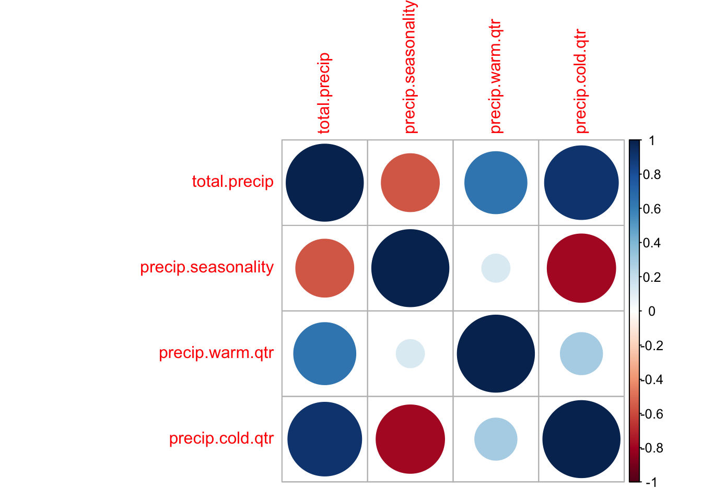
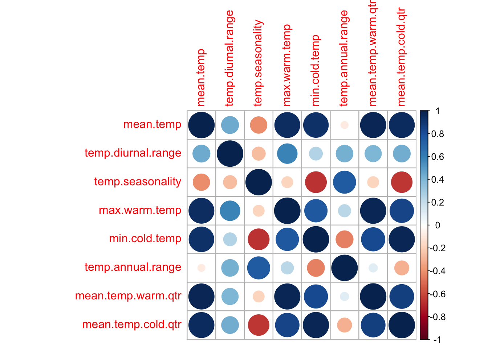
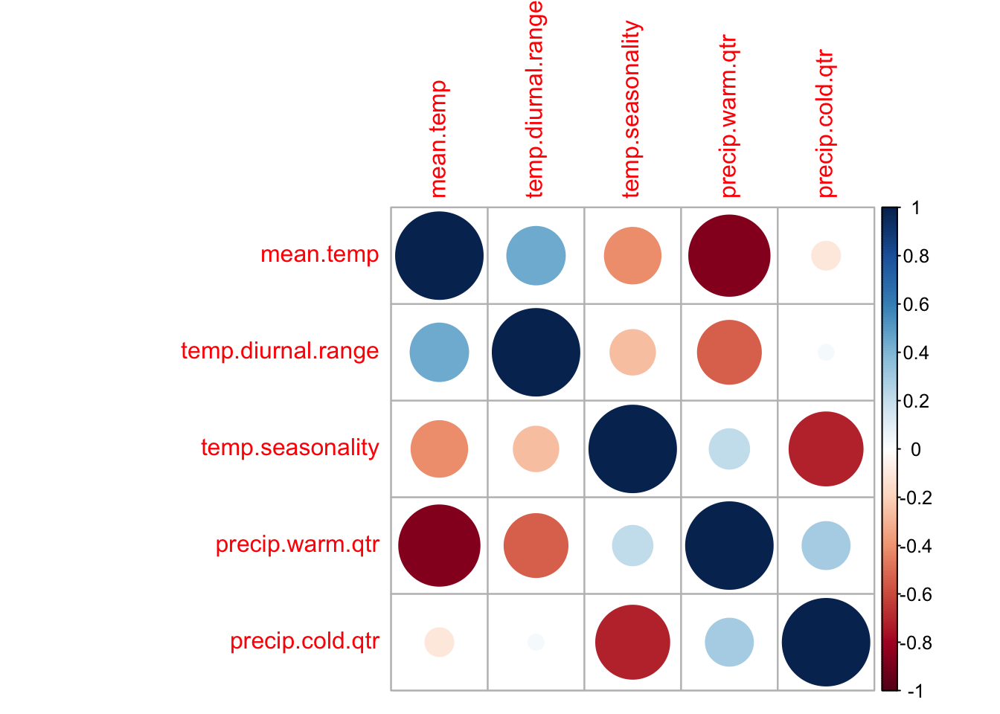
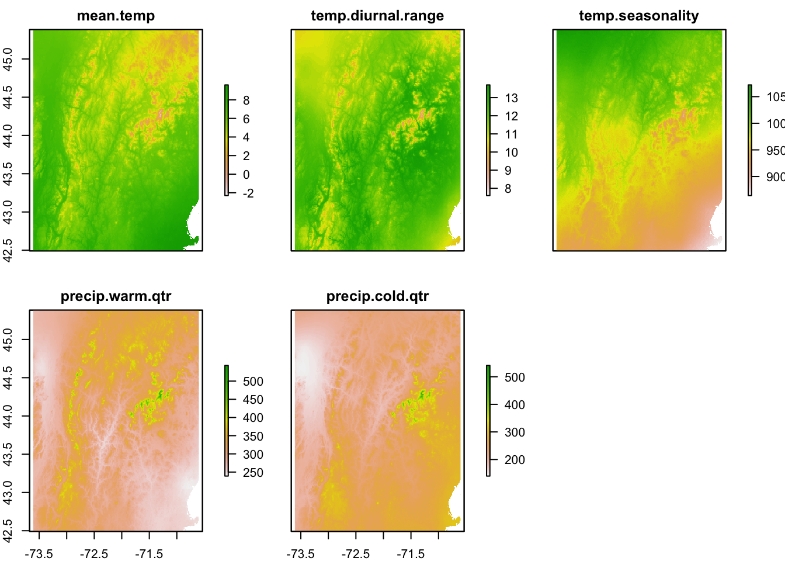

Chapter 6 Variable Correlation
Including variables that are highly correlated is a big problem when doing regression analyses. You will get pairs of highly positive and negative effect size estimates and huge standard errors on your estimates. So we need to evaluate correlation and select a set of variables that is not terribly correlated.
This example will use the following libraries.
6.1 Set-up
Load the data for the SDMs prepared in earlier chapters. This loads dat.und with the climate data for each cell with presences of Trillium undulatum plus the background cells.
There are a few covariates that I know I don’t want. Specifically, the wet and dry qtr variables because that is summer in some cells and winter in others. Also I’ll exclude Snow since that is all 0 and Barren since that is almost all 0. And I’ll exclude cells and species since I don’t use those ever. Finally, dominant land cover is a categorical variable so I will exclude that (to make my life easier).
6.2 Variable correlation
First I will use the corrplot package to look at correlation visually.
tmpdat <- subset(dat.und, select = stringr::str_detect(colnames(dat.und),
"precip"))
varCor <- cor(tmpdat, use = "na.or.complete")
corrplot::corrplot(varCor)
Many of the temperature variables are very correlated.
tmpdat <- subset(dat.und, select = stringr::str_detect(colnames(dat.und),
"temp"))
varCor <- cor(tmpdat, use = "na.or.complete")
corrplot::corrplot(varCor)
After exploring the models, I came up with the following set of not too correlated variables that still explain much of the variability in presence/absence. This set was selected by 1) considering what factors might influence a long-lived wildflower, 2) looking at the correlation plots, and 3) fitting different GAM models and looking at the effects curves for evidence of collinearity problems. The latter can be seen with curves that are mirrors of each other with high uncertainty (a hallmark of collinearity problems). But below I will also try variance inflation to select a set of non-collinear variables.
envvars <- c("mean.temp", "temp.diurnal.range", "temp.seasonality",
"precip.warm.qtr", "precip.cold.qtr")That gets me a set of variables that are not so horribly correlated.
tmpdat <- dat.und[, envvars]
varCor <- cor(tmpdat, use = "na.or.complete")
corrplot::corrplot(varCor)
And the variance inflation factors look ok.
Variables VIF
1 mean.temp 5.210197
2 temp.diurnal.range 1.500477
3 temp.seasonality 4.032876
4 precip.warm.qtr 5.607584
5 precip.cold.qtr 3.739644
6.3 Variance Inflation Factor
As an experiment, I will use variable inflation to select a set of non-correlated variables. This doesn’t try to use any biological reasoning about limiting factors for Trillium. It is just a statistical method to chose a set of uncorrelated variables.
vifres <- usdm::vifstep(subset(dat.und, select = c(-pa, -lon,
-lat)))
vifvars <- as.character(vifres@results$Variables)
vifvars [1] "temp.diurnal.range" "temp.seasonality"
[3] "mean.temp.warm.qtr" "precip.seasonality"
[5] "precip.warm.qtr" "precip.cold.qtr"
[7] "slope" "aspect"
[9] "Evergreen.Broadleaf.Trees" "Deciduous.Broadleaf.Trees"
[11] "Shrubs" "Herbaceous"
[13] "Cultivated" "Flooded"
[15] "Urban" "Water" 6.4 Save
I’ll test models with all variables and these subsets.
topovars <- c("elevation", "slope", "aspect")
lcvars <- c("Tree.Cover", "mean.temp", "precip.warm.qtr")
envvars <- c("mean.temp", "temp.diurnal.range", "temp.seasonality",
"precip.warm.qtr", "precip.cold.qtr")
minEnvVars <- c("precip.warm.qtr", "mean.temp", "temp.diurnal.range")I’ll save because I’ll be using these variables across different SDM chapters. This code loads in my existing sdm_data file, records what objects are there (tmp is a character vector of objects in sdm_data), and then resaves with the original objects plus the ones I want to add.